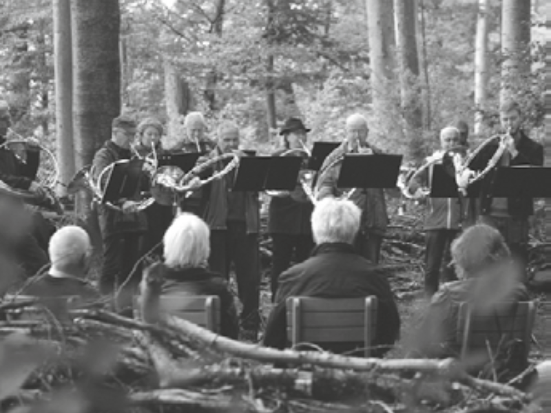

Universelle Inhaltsseite · Vorlage
Seitentitel über maximal zwei Zeilen
Lead-Text: zwei bis drei Sätze, die den Inhalt der Seite zusammenfassen. Wird auch für Vorschau und Social Media verwendet.
Meta
Publiziert 12. September 2026 · Kulturkreis
HEADERBILD
Zwischentitel
Fliesstext. Dieser Absatz zeigt die Standard-Textspalte: maximal rund 62 Zeichen pro Zeile, 1.6 Zeilenabstand. Aufzählungen, Links und Hervorhebungen folgen der gleichen Typografie wie im übrigen Auftritt.
- – Listenpunkt eins
- – Listenpunkt zwei mit Link im Text
- – Listenpunkt drei
«Zitat über zwei bis drei Zeilen, gesetzt im Akzentgelb.»
Weiterer Fliesstext nach dem Zitat. Bilder in dieser Spalte sind linksbündig zum Text gesetzt und nehmen die volle Spaltenbreite ein.

Bildlegende · Foto: Helen Wehrli